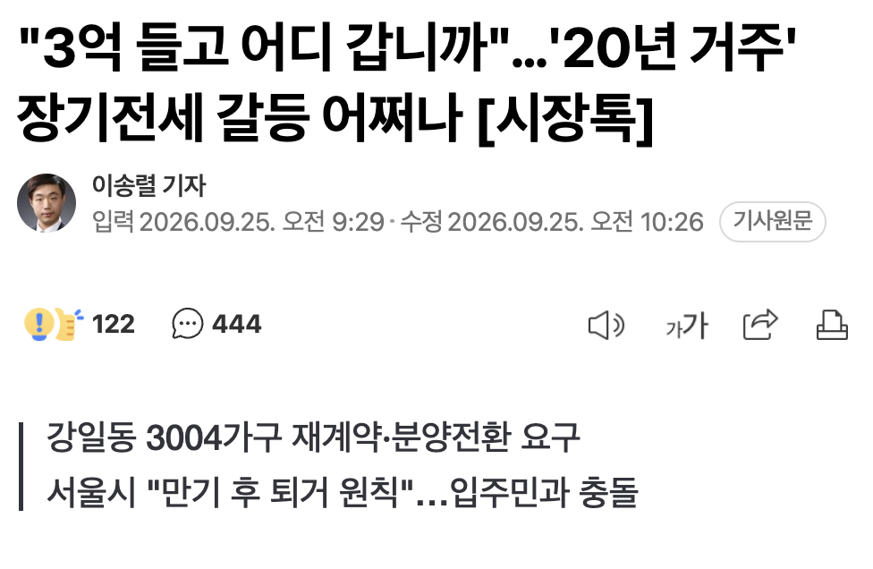
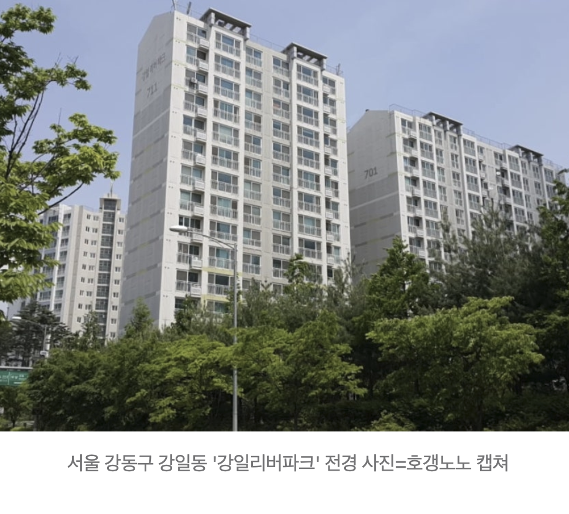
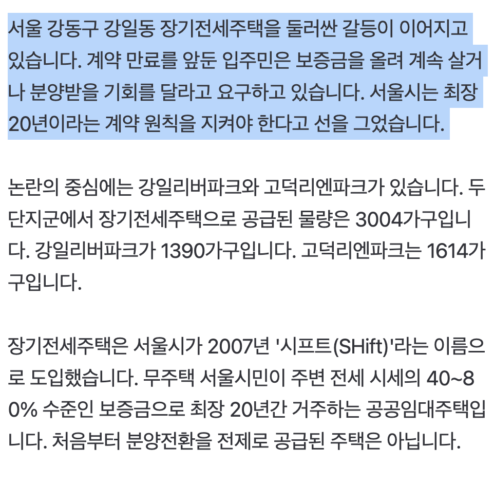
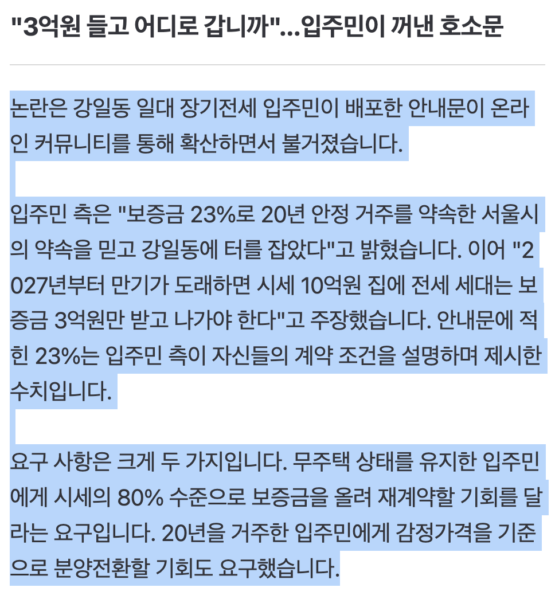
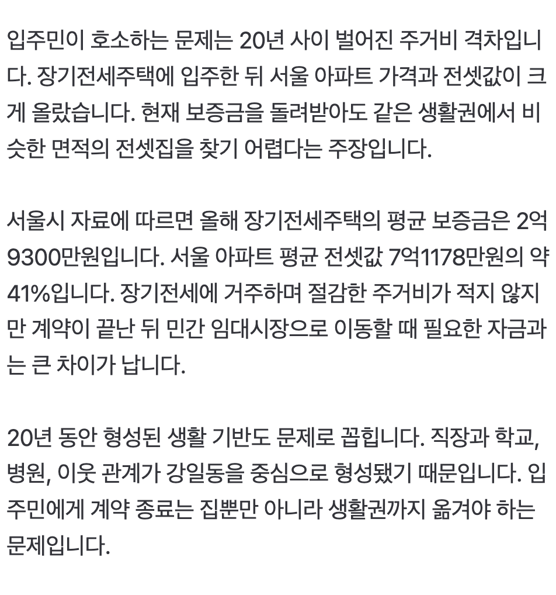
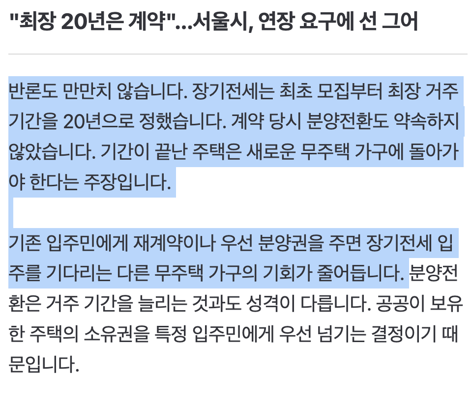
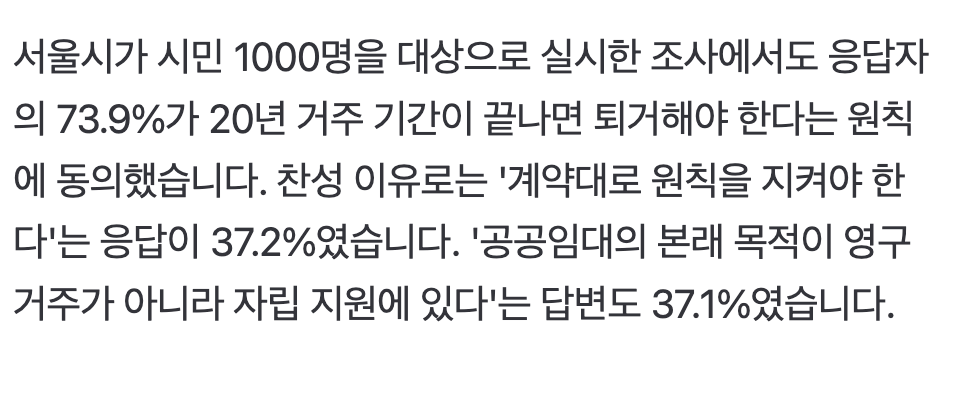

https://n.news.naver.com/article/015/0005336004
참고: 🏠 집값 띄우려는 ‘담합’ 끊이지 않았다…수도권 신고만 483건







https://n.news.naver.com/article/015/0005336004
돈없으면 다른데가라니까?
20년동안 삼하 주식만 모았어도
저거 버티는이유가 옛날에 공공주택 계약만기할때 분양으로 준 전력이있어서 그럼ㅋㅋㅋ 한 90년대 00년대 이때
자자자 시골로 가시면 됩니다
퐈이어 가능